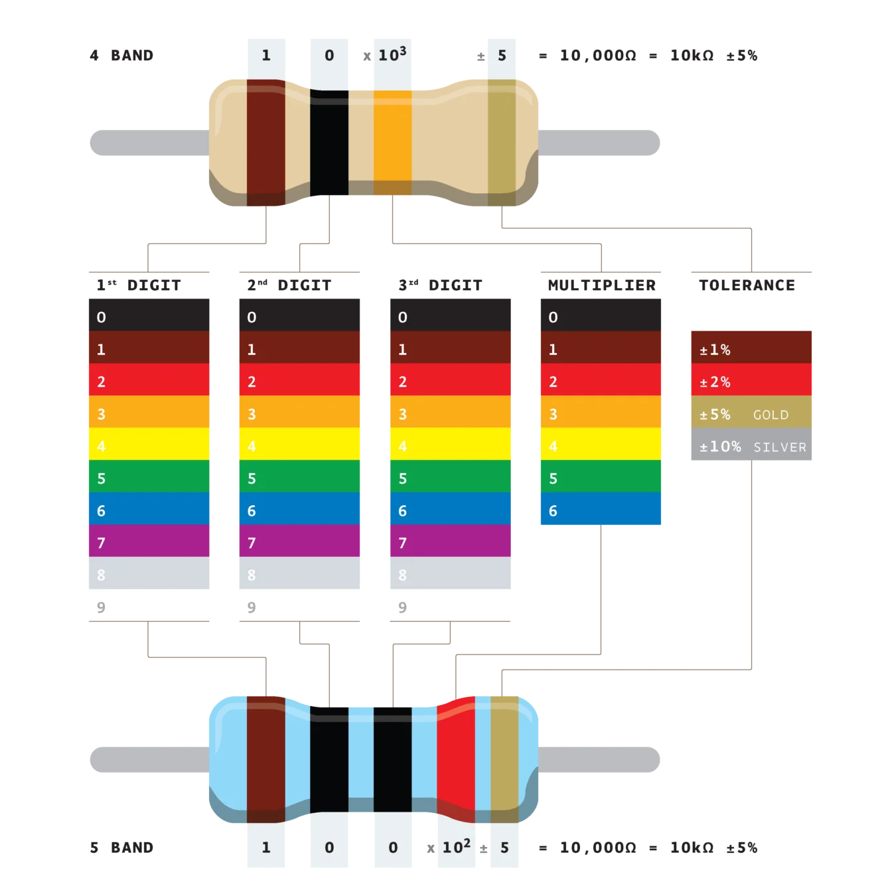

Lire, écrire et interpréter le code couleur des résistances à 4 et 5 bandes.
🔍 Situation problème
Les résistances ne portent généralement pas leur valeur en clair.
Comment retrouver leur valeur grâce aux bandes de couleur ?

1. Le code couleur
Une résistance possède généralement 4 ou 5 bandes de couleur.
Bande 1
Bande 2
Multiplicateur
Tolérance
1er chiffre
2e chiffre
Facteur 10ⁿ
%
Correspondance des couleurs
Couleur
Valeur
Noir
0
Marron
1
Rouge
2
Orange
3
Jaune
4
Vert
5
Bleu
6
Violet
7
Gris
8
Blanc
9
Multiplicateurs
Couleur
Multiplicateur
Noir
×1
Marron
×10
Rouge
×100
Orange
×1 kΩ
Jaune
×10 kΩ
Vert
×100 kΩ
Bleu
×1 MΩ
Tolérances
Couleur
Tolérance
Marron
±1 %
Rouge
±2 %
Or
±5 %
Argent
±10 %
Pour une résistance à 5 bandes : les trois premières bandes représentent les chiffres significatifs, la quatrième le multiplicateur et la cinquième la tolérance.
2. Exercices : couleurs → valeur
Jaune – Violet – Rouge – Or
Calculer la valeur de la résistance.
Marron – Noir – Marron – Rouge – Vert
Calculer la valeur de la résistance.
Orange – Blanc – Orange – Or
Calculer la valeur de la résistance.
À retenir :
Lire de gauche vers la droite.
Convertir si nécessaire en kΩ ou MΩ.
3. Exercices : valeur → couleurs
100 Ω ±5 %
330 Ω ±5 %
2,2 kΩ ±10 %
47 kΩ ±5 %
1 100 Ω ±0,5 % (5 bandes)
39 kΩ ±5 % (5 bandes)
4. Application
Comment choisir la bonne résistance dans un montage électronique ?
Quelle résistance (code couleur) choisir pour protéger une DEL alimentée sous 5 V consommant 20 mA ?
📋 Synthèse
Les deux ou trois premières bandes donnent les chiffres significatifs.
La bande suivante indique le multiplicateur.
La dernière bande donne la tolérance.
Le code couleur permet d'identifier rapidement une résistance.